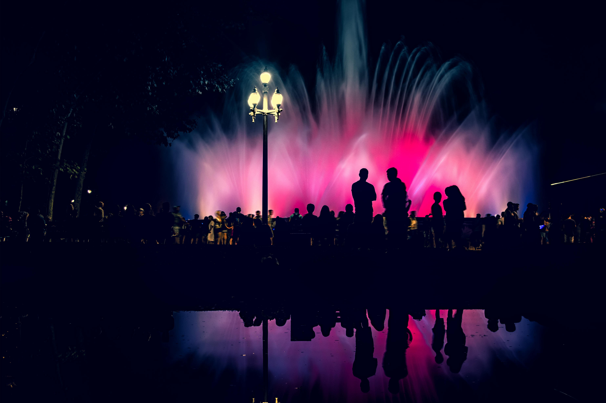
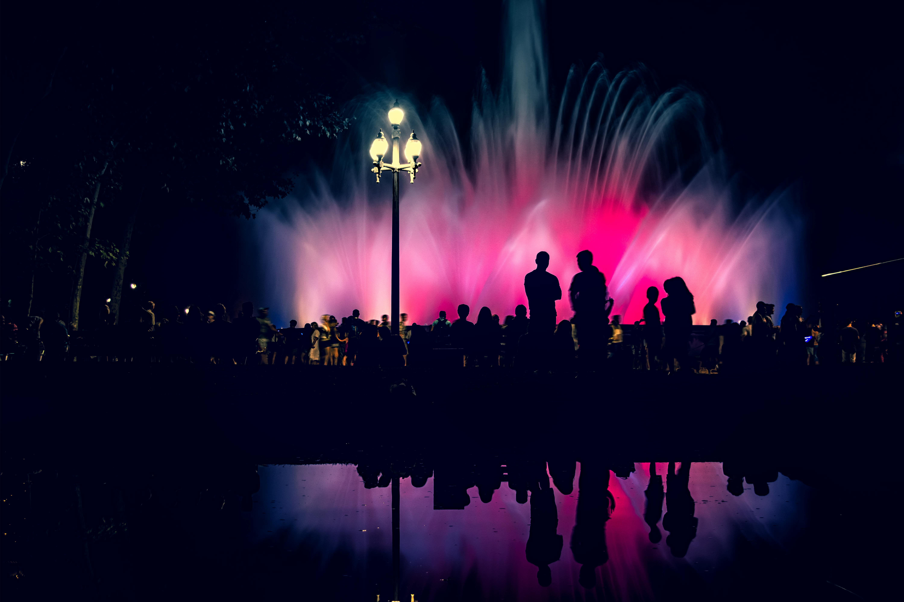
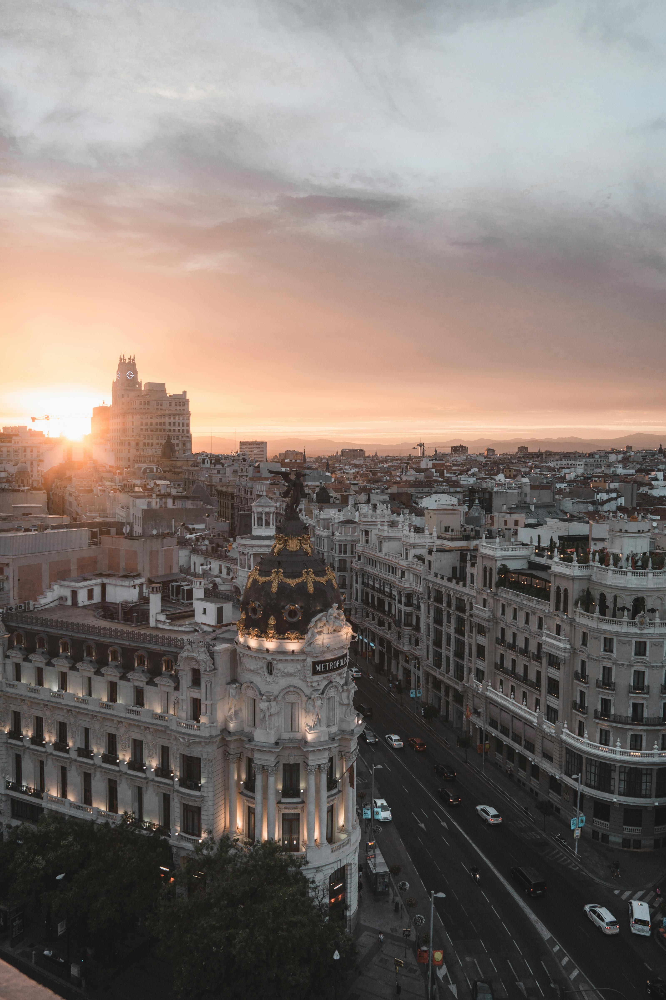
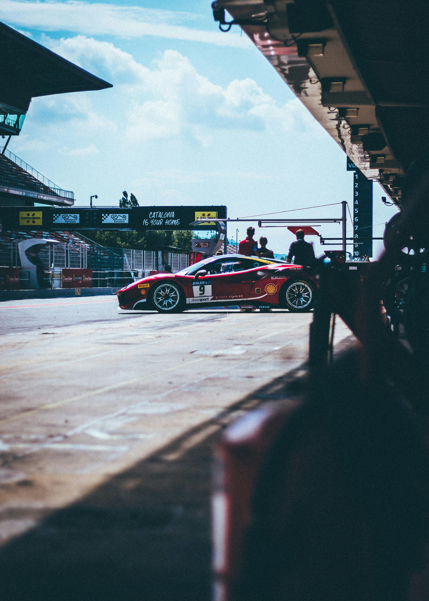
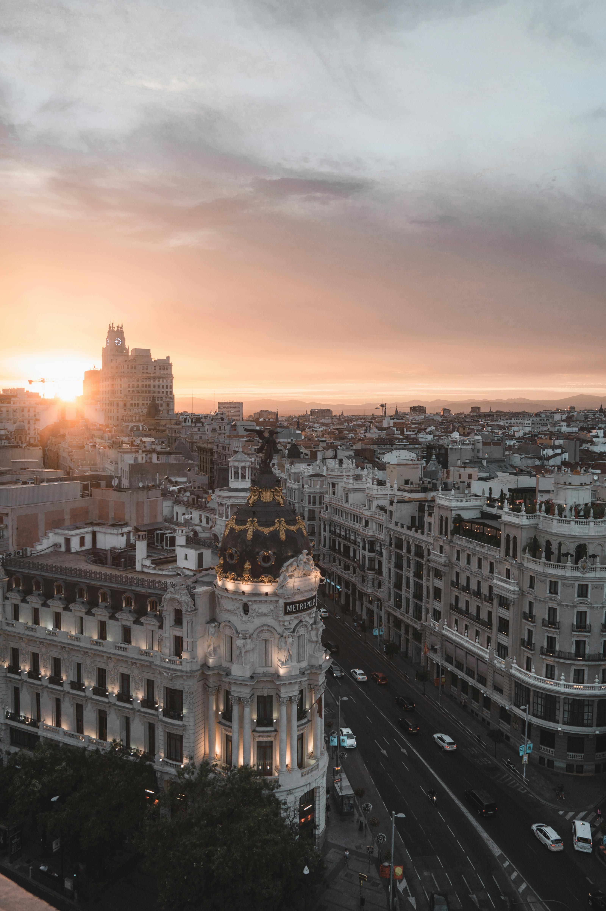
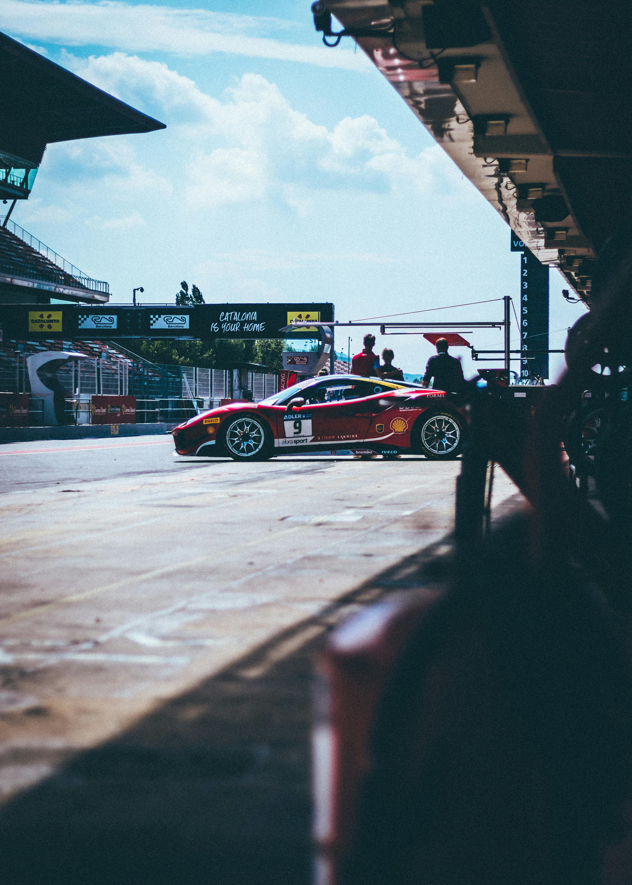

Why Barcelona?
Barcelona, the City of Counts
Known as the 'City of Counts,' Barcelona is a city where history and innovation seamlessly intertwine. Tourists are captivated by its iconic landmarks, such as Antoni Gaudí's Sagrada Família and Park Güell, which showcase Barcelona's unique blend of Gothic and modernist architecture. The city's historic neighborhoods, like the Gothic Quarter, invite visitors to explore winding medieval streets, hidden squares, and centuries-old buildings that tell the story of Barcelona's rich heritage.
Beyond its architecture, Barcelona offers a vibrant lifestyle and endless activities. From relaxing on its golden beaches to strolling along the bustling Las Ramblas, the city provides a perfect mix of relaxation and excitement. Food lovers can indulge in authentic Catalan cuisine and bustling tapas bars, while sports enthusiasts can visit Camp Nou, home to FC Barcelona. With its sunny climate and dynamic culture, Barcelona is a destination that truly has it all.
Things to do
My favorite activities in Barcelona

Tibidabo Amusement Park
Tibidabo Amusement Park is an amusement park located on Tibidabo in the Collserola Ridge in Barcelona. The park was built in 1899 by the entrepreneur Salvador Andreu and opened in 1905. The park is among the oldest in the world still functioning. It is Spain's longest running amusement park.
Address
Pl. del Tibidabo, 3, 4, Sarrià-Sant Gervasi, 08035 Barcelona, Spain
What I like about it
This is one of my favorites because of its exciting rides and unique location overlooking Barcelona. From thrilling attractions to charming vintage carousels, it offers endless fun with unforgettable views of the city.

Lluís Companys Olympic Stadium
The Lluís Companys Olympic Stadium is a historic landmark, built for the 1929 International Exposition and renovated for the 1992 Olympics. It’s a must-visit for its rich athletic heritage and the electrifying experience of an FCB football game—a true highlight of Spain’s passionate sports culture!
Address
Passeig Olímpic, 17, 19, Sants-Montjuïc, 08038 Barcelona, Spain
What I like about it
I love this stadium for the vibrant energy during FCB matches. Watching a game here is an unforgettable experience that truly showcases the passion and spirit of the city.
Shôko
Shôko is one of the city’s most iconic venues. By day, it serves exquisite Asian-Mediterranean fusion cuisine with perfect ocean views. By night, it transforms into an electrifying club with world-class DJs, lively music, and an unparalleled party atmosphere. It captures the best of Barcelona’s dining and nightlife scenes in one unforgettable location.
Address
Pg. Marítim de la Barceloneta, 36, Ciutat Vella, 08005 Barcelona, Spain
What I like about it
I love Shôko for its energetic vibe and stunning beachfront location. Dancing the night away with great music and ocean views makes it an unforgettable spot in Barcelona.
gallery
My photos from Barcelona
 

 


